二叉搜索树
如下图所示，「二叉搜索树 binary search tree」满足以下条件。
- 对于根节点，左子树中所有节点的值 $<$ 根节点的值 $<$ 右子树中所有节点的值。
- 任意节点的左、右子树也是二叉搜索树，即同样满足条件
1.。

二叉搜索树的操作
我们将二叉搜索树封装为一个类 BinarySearchTree ，并声明一个成员变量 root ，指向树的根节点。
查找节点
给定目标节点值 num ，可以根据二叉搜索树的性质来查找。如下图所示，我们声明一个节点 cur ，从二叉树的根节点 root 出发，循环比较节点值 cur.val 和 num 之间的大小关系。
- 若
cur.val < num，说明目标节点在cur的右子树中，因此执行cur = cur.right。 - 若
cur.val > num，说明目标节点在cur的左子树中，因此执行cur = cur.left。 若
cur.val = num，说明找到目标节点，跳出循环并返回该节点。"<1>" 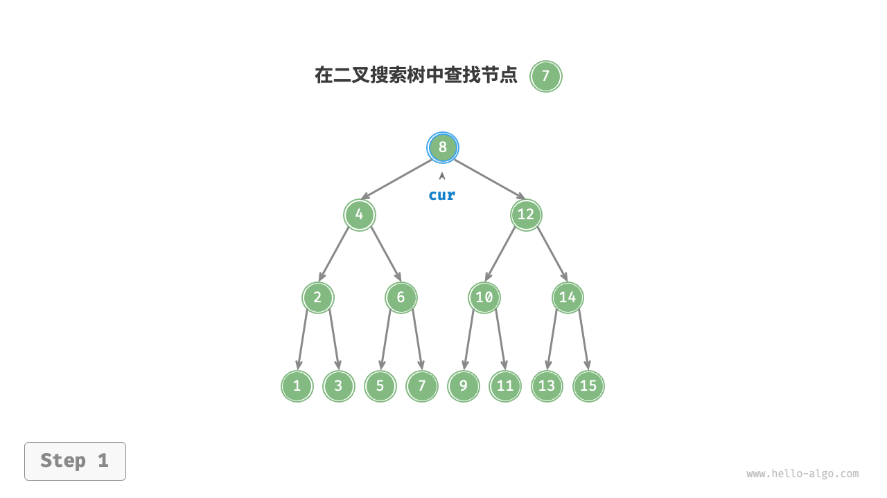
"<2>" 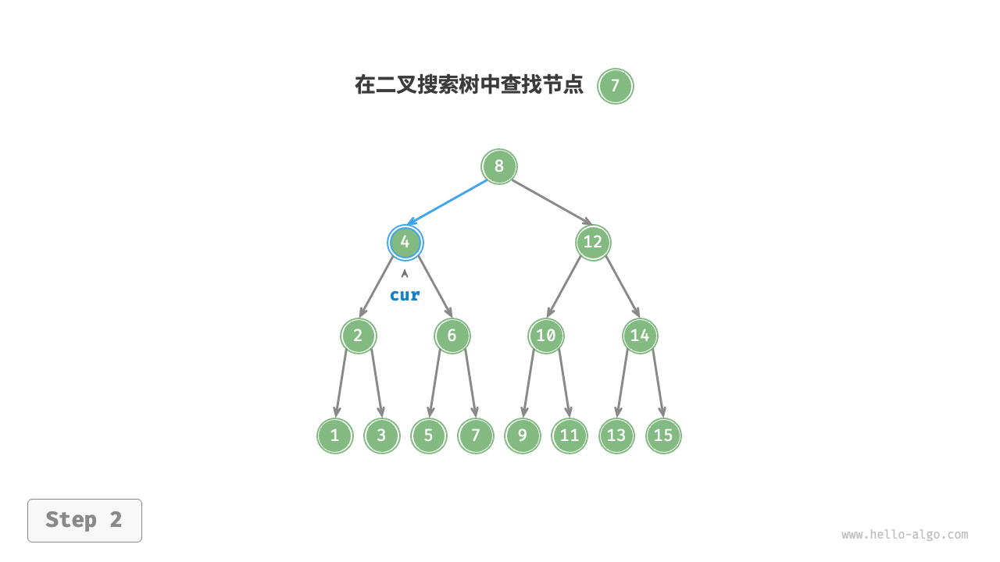
"<3>" 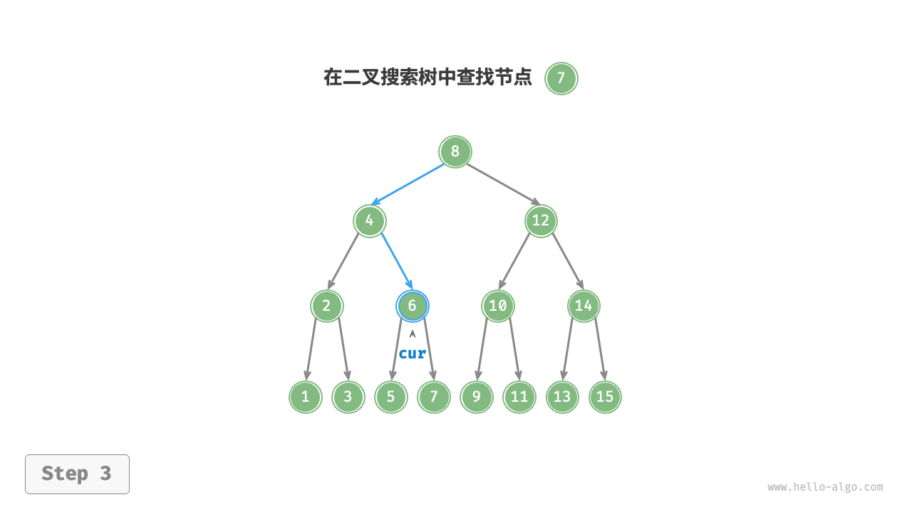
"<4>" 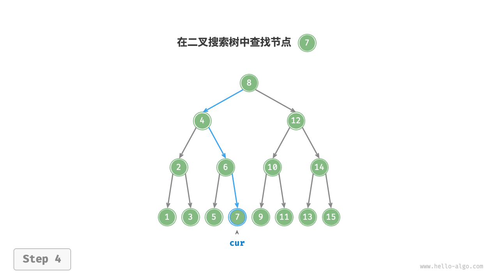
二叉搜索树的查找操作与二分查找算法的工作原理一致，都是每轮排除一半情况。循环次数最多为二叉树的高度，当二叉树平衡时，使用 $O(\log n)$ 时间。示例代码如下：
"Python"
def search(self, num: int) -> TreeNode | None: """查找节点""" cur = self._root // 循环查找，越过叶节点后跳出 while cur is not None: // 目标节点在 cur 的右子树中 if cur.val < num: cur = cur.right // 目标节点在 cur 的左子树中 elif cur.val > num: cur = cur.left // 找到目标节点，跳出循环 else: break return cur"C++"
/* 查找节点 */ TreeNode *search(int num) { TreeNode *cur = root; // 循环查找，越过叶节点后跳出 while (cur != nullptr) { // 目标节点在 cur 的右子树中 if (cur->val < num) cur = cur->right; // 目标节点在 cur 的左子树中 else if (cur->val > num) cur = cur->left; // 找到目标节点，跳出循环 else break; } // 返回目标节点 return cur; }"Java"
/* 查找节点 */ TreeNode search(int num) { TreeNode cur = root; // 循环查找，越过叶节点后跳出 while (cur != null) { // 目标节点在 cur 的右子树中 if (cur.val < num) cur = cur.right; // 目标节点在 cur 的左子树中 else if (cur.val > num) cur = cur.left; // 找到目标节点，跳出循环 else break; } // 返回目标节点 return cur; }
插入节点
给定一个待插入元素 num ，为了保持二叉搜索树“左子树 < 根节点 < 右子树”的性质，插入操作流程如下图所示。
- 查找插入位置：与查找操作相似，从根节点出发，根据当前节点值和
num的大小关系循环向下搜索，直到越过叶节点（遍历至None）时跳出循环。 - 在该位置插入节点：初始化节点
num，将该节点置于None的位置。
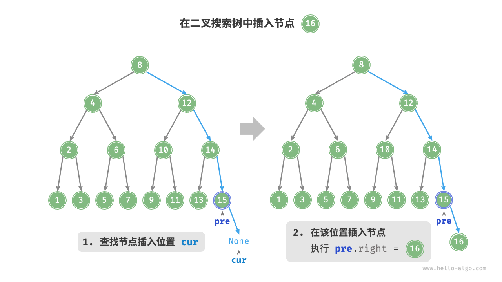
在代码实现中，需要注意以下两点。
- 二叉搜索树不允许存在重复节点，否则将违反其定义。因此，若待插入节点在树中已存在，则不执行插入，直接返回。
为了实现插入节点，我们需要借助节点
pre保存上一轮循环的节点。这样在遍历至None时，我们可以获取到其父节点，从而完成节点插入操作。"Python"
def insert(self, num: int): """插入节点""" // 若树为空，则初始化根节点 if self._root is None: self._root = TreeNode(num) return // 循环查找，越过叶节点后跳出 cur, pre = self._root, None while cur is not None: // 找到重复节点，直接返回 if cur.val == num: return pre = cur // 插入位置在 cur 的右子树中 if cur.val < num: cur = cur.right // 插入位置在 cur 的左子树中 else: cur = cur.left // 插入节点 node = TreeNode(num) if pre.val < num: pre.right = node else: pre.left = node"C++"
/* 插入节点 */ void insert(int num) { // 若树为空，则初始化根节点 if (root == nullptr) { root = new TreeNode(num); return; } TreeNode *cur = root, *pre = nullptr; // 循环查找，越过叶节点后跳出 while (cur != nullptr) { // 找到重复节点，直接返回 if (cur->val == num) return; pre = cur; // 插入位置在 cur 的右子树中 if (cur->val < num) cur = cur->right; // 插入位置在 cur 的左子树中 else cur = cur->left; } // 插入节点 TreeNode *node = new TreeNode(num); if (pre->val < num) pre->right = node; else pre->left = node; }"Java"
/* 插入节点 */ void insert(int num) { // 若树为空，则初始化根节点 if (root == null) { root = new TreeNode(num); return; } TreeNode cur = root, pre = null; // 循环查找，越过叶节点后跳出 while (cur != null) { // 找到重复节点，直接返回 if (cur.val == num) return; pre = cur; // 插入位置在 cur 的右子树中 if (cur.val < num) cur = cur.right; // 插入位置在 cur 的左子树中 else cur = cur.left; } // 插入节点 TreeNode node = new TreeNode(num); if (pre.val < num) pre.right = node; else pre.left = node; }
与查找节点相同，插入节点使用 $O(\log n)$ 时间。
删除节点
先在二叉树中查找到目标节点，再将其删除。与插入节点类似，我们需要保证在删除操作完成后，二叉搜索树的“左子树 < 根节点 < 右子树”的性质仍然满足。因此，我们根据目标节点的子节点数量，分 0、1 和 2 三种情况，执行对应的删除节点操作。
如下图所示，当待删除节点的度为 $0$ 时，表示该节点是叶节点，可以直接删除。
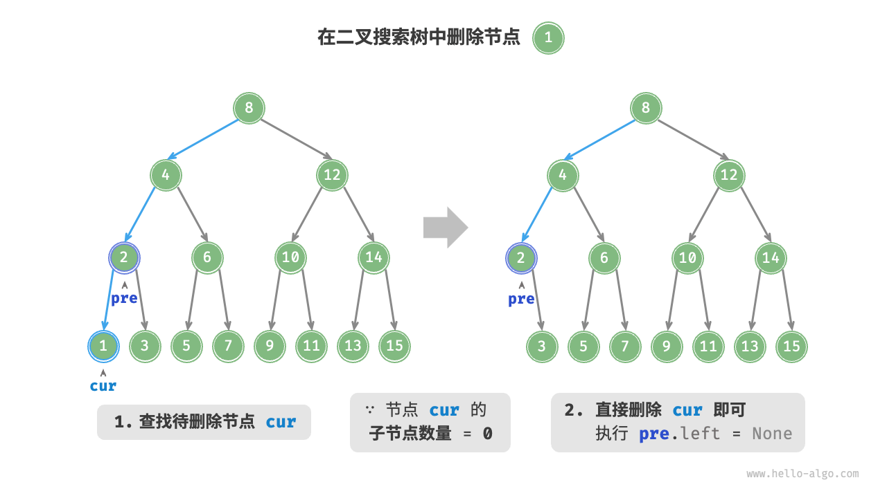
如下图所示，当待删除节点的度为 $1$ 时，将待删除节点替换为其子节点即可。
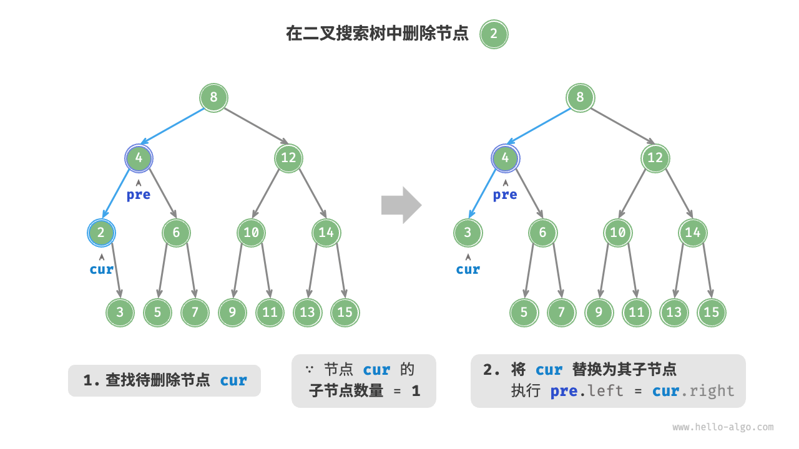
当待删除节点的度为 $2$ 时，我们无法直接删除它，而需要使用一个节点替换该节点。由于要保持二叉搜索树“左子树 $<$ 根节点 $<$ 右子树”的性质，因此这个节点可以是右子树的最小节点或左子树的最大节点。
假设我们选择右子树的最小节点（中序遍历的下一个节点），则删除操作流程如下图所示。
- 找到待删除节点在“中序遍历序列”中的下一个节点，记为
tmp。 用
tmp的值覆盖待删除节点的值，并在树中递归删除节点tmp。"<1>" 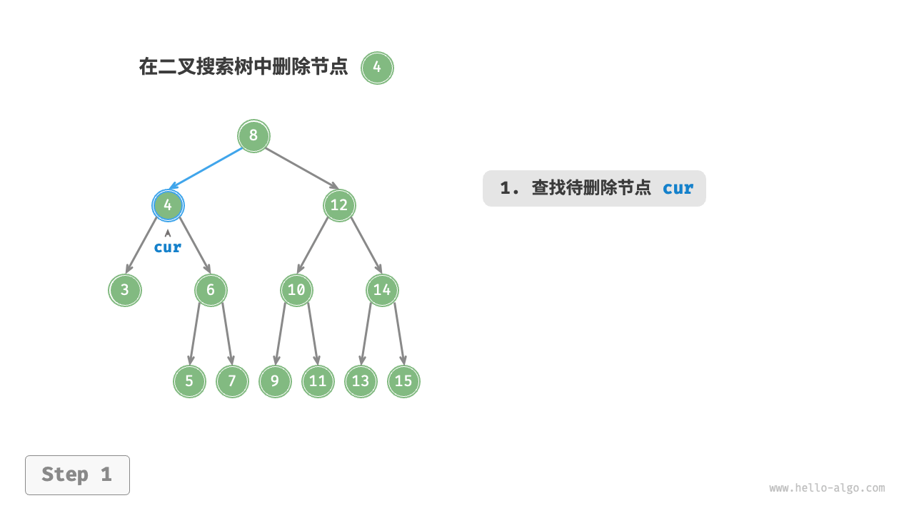
"<2>" 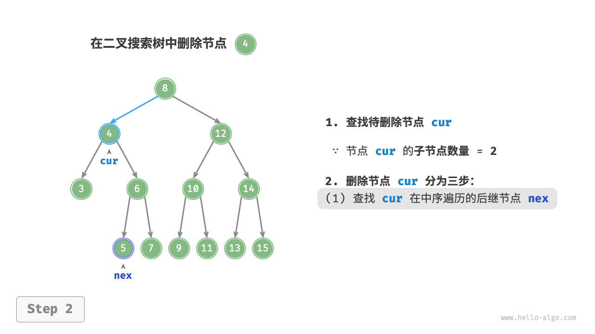
"<3>" 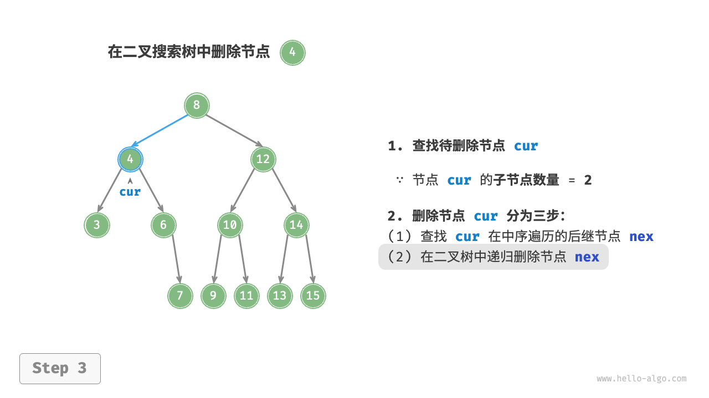
"<4>" 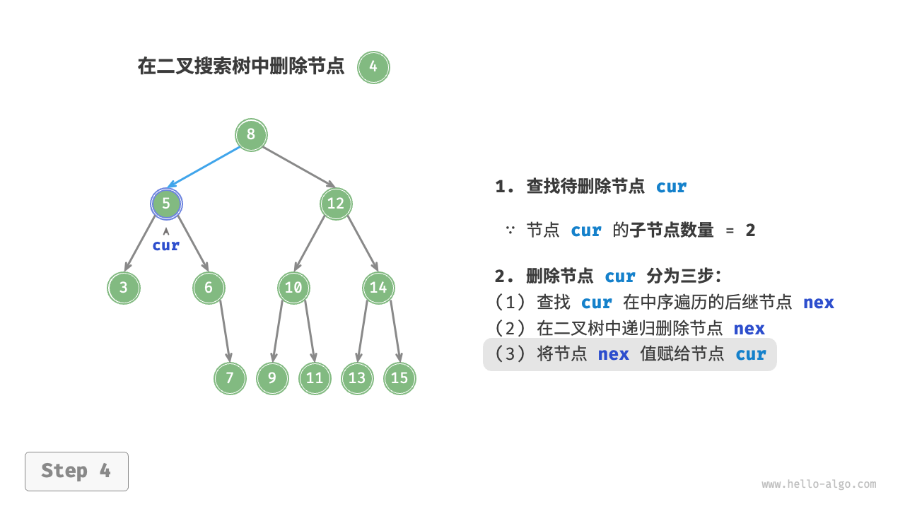
删除节点操作同样使用 $O(\log n)$ 时间，其中查找待删除节点需要 $O(\log n)$ 时间，获取中序遍历后继节点需要 $O(\log n)$ 时间。示例代码如下：
"Python"
def remove(self, num: int): """删除节点""" // 若树为空，直接提前返回 if self._root is None: return // 循环查找，越过叶节点后跳出 cur, pre = self._root, None while cur is not None: // 找到待删除节点，跳出循环 if cur.val == num: break pre = cur // 待删除节点在 cur 的右子树中 if cur.val < num: cur = cur.right // 待删除节点在 cur 的左子树中 else: cur = cur.left // 若无待删除节点，则直接返回 if cur is None: return // 子节点数量 = 0 or 1 if cur.left is None or cur.right is None: // 当子节点数量 = 0 / 1 时， child = null / 该子节点 child = cur.left or cur.right // 删除节点 cur if cur != self._root: if pre.left == cur: pre.left = child else: pre.right = child else: // 若删除节点为根节点，则重新指定根节点 self._root = child // 子节点数量 = 2 else: // 获取中序遍历中 cur 的下一个节点 tmp: TreeNode = cur.right while tmp.left is not None: tmp = tmp.left // 递归删除节点 tmp self.remove(tmp.val) // 用 tmp 覆盖 cur cur.val = tmp.val"C++"
/* 删除节点 */ void remove(int num) { // 若树为空，直接提前返回 if (root == nullptr) return; TreeNode *cur = root, *pre = nullptr; // 循环查找，越过叶节点后跳出 while (cur != nullptr) { // 找到待删除节点，跳出循环 if (cur->val == num) break; pre = cur; // 待删除节点在 cur 的右子树中 if (cur->val < num) cur = cur->right; // 待删除节点在 cur 的左子树中 else cur = cur->left; } // 若无待删除节点，则直接返回 if (cur == nullptr) return; // 子节点数量 = 0 or 1 if (cur->left == nullptr || cur->right == nullptr) { // 当子节点数量 = 0 / 1 时， child = nullptr / 该子节点 TreeNode *child = cur->left != nullptr ? cur->left : cur->right; // 删除节点 cur if (cur != root) { if (pre->left == cur) pre->left = child; else pre->right = child; } else { // 若删除节点为根节点，则重新指定根节点 root = child; } // 释放内存 delete cur; } // 子节点数量 = 2 else { // 获取中序遍历中 cur 的下一个节点 TreeNode *tmp = cur->right; while (tmp->left != nullptr) { tmp = tmp->left; } int tmpVal = tmp->val; // 递归删除节点 tmp remove(tmp->val); // 用 tmp 覆盖 cur cur->val = tmpVal; } }"Java"
/* 删除节点 */ void remove(int num) { // 若树为空，直接提前返回 if (root == null) return; TreeNode cur = root, pre = null; // 循环查找，越过叶节点后跳出 while (cur != null) { // 找到待删除节点，跳出循环 if (cur.val == num) break; pre = cur; // 待删除节点在 cur 的右子树中 if (cur.val < num) cur = cur.right; // 待删除节点在 cur 的左子树中 else cur = cur.left; } // 若无待删除节点，则直接返回 if (cur == null) return; // 子节点数量 = 0 or 1 if (cur.left == null || cur.right == null) { // 当子节点数量 = 0 / 1 时， child = null / 该子节点 TreeNode child = cur.left != null ? cur.left : cur.right; // 删除节点 cur if (cur != root) { if (pre.left == cur) pre.left = child; else pre.right = child; } else { // 若删除节点为根节点，则重新指定根节点 root = child; } } // 子节点数量 = 2 else { // 获取中序遍历中 cur 的下一个节点 TreeNode tmp = cur.right; while (tmp.left != null) { tmp = tmp.left; } // 递归删除节点 tmp remove(tmp.val); // 用 tmp 覆盖 cur cur.val = tmp.val; } }
中序遍历有序
如下图所示，二叉树的中序遍历遵循“左 $\rightarrow$ 根 $\rightarrow$ 右”的遍历顺序，而二叉搜索树满足“左子节点 $<$ 根节点 $<$ 右子节点”的大小关系。
这意味着在二叉搜索树中进行中序遍历时，总是会优先遍历下一个最小节点，从而得出一个重要性质：二叉搜索树的中序遍历序列是升序的。
利用中序遍历升序的性质，我们在二叉搜索树中获取有序数据仅需 $O(n)$ 时间，无须进行额外的排序操作，非常高效。

二叉搜索树的效率
给定一组数据，我们考虑使用数组或二叉搜索树存储。观察下表，二叉搜索树的各项操作的时间复杂度都是对数阶，具有稳定且高效的性能。只有在高频添加、低频查找删除数据的场景下，数组比二叉搜索树的效率更高。
表
| 无序数组 | 二叉搜索树 | |
|---|---|---|
| 查找元素 | $O(n)$ | $O(\log n)$ |
| 插入元素 | $O(1)$ | $O(\log n)$ |
| 删除元素 | $O(n)$ | $O(\log n)$ |
在理想情况下，二叉搜索树是“平衡”的，这样就可以在 $\log n$ 轮循环内查找任意节点。
然而，如果我们在二叉搜索树中不断地插入和删除节点，可能导致二叉树退化为下图所示的链表，这时各种操作的时间复杂度也会退化为 $O(n)$ 。
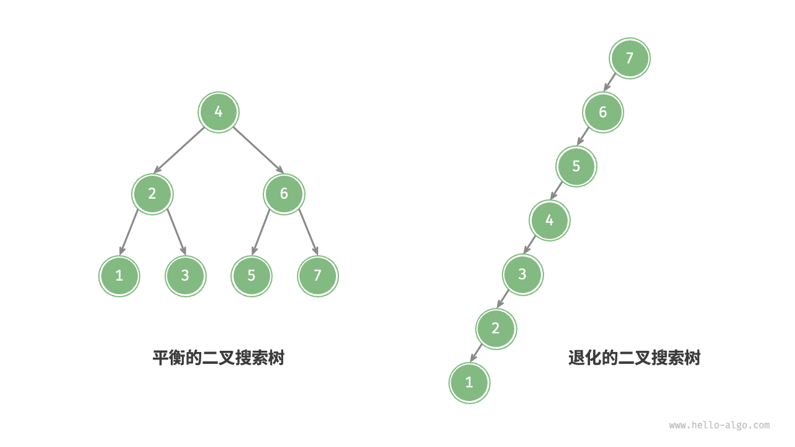
二叉搜索树常见应用
- 用作系统中的多级索引，实现高效的查找、插入、删除操作。
- 作为某些搜索算法的底层数据结构。
- 用于存储数据流，以保持其有序状态。